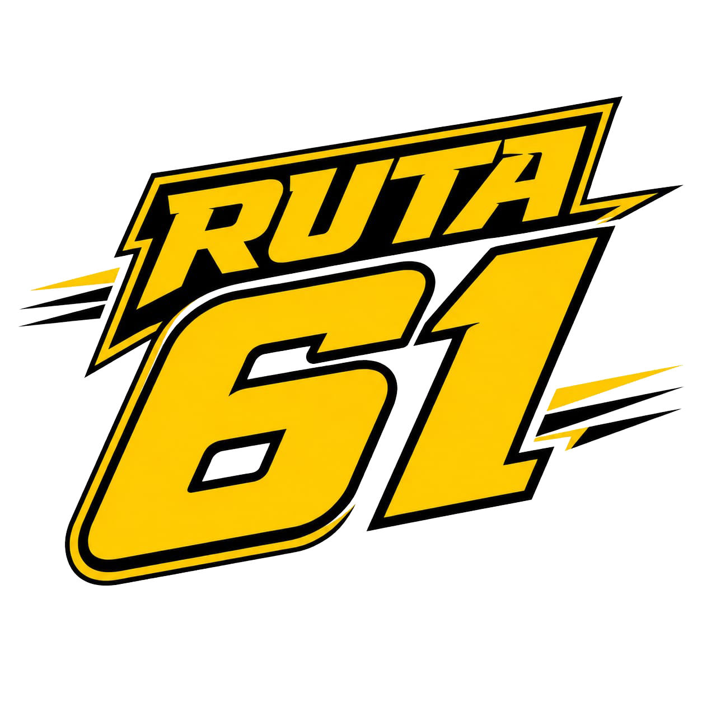
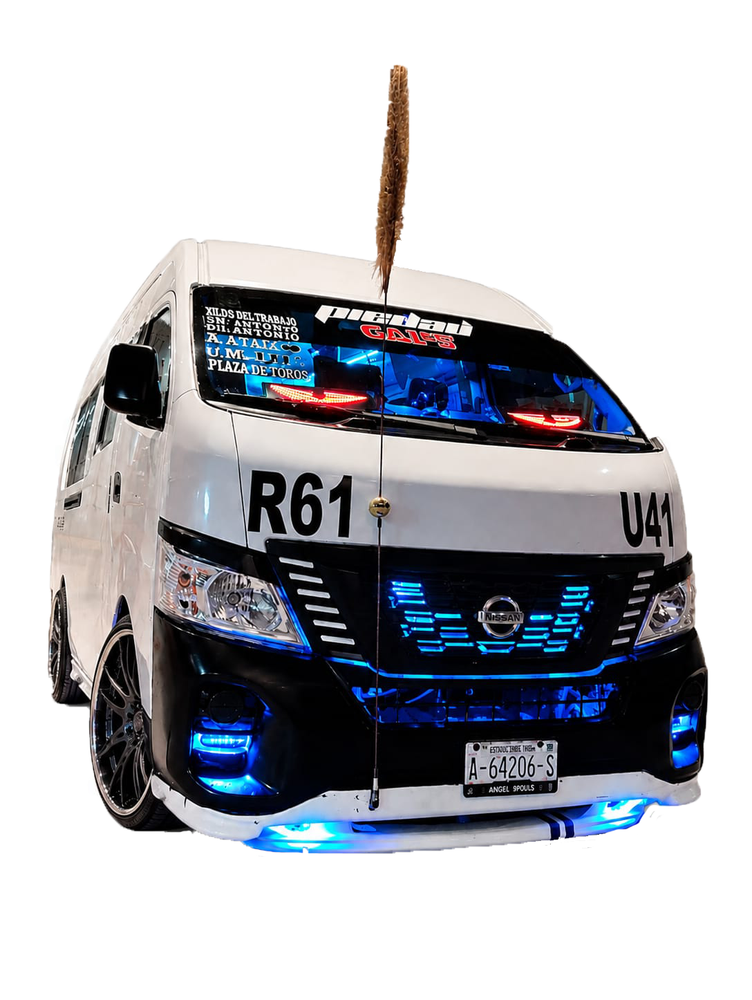

Ruta 61
Un proyecto innovador en una ruta de puebla de trayecto de Angelópolis con destino a Infonavit la barranca.


Un proyecto innovador en una ruta de puebla de trayecto de Angelópolis con destino a Infonavit la barranca.
